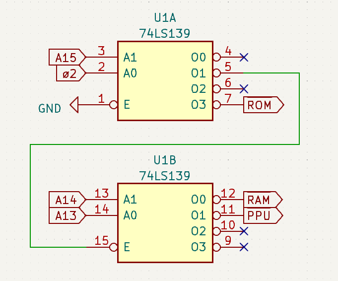

🦊 smal's blog
Useful TTL Chips for homebrew computing
Shift Registers
Feedback circuits
Shift Registers can also be setup to serve as timers and clock generators, for example here is part of the clock generation logic of the Apple 2 where multiple lines on a '''''shift register are tied together in specific ways in order to generate several clock signals that are needed by different components of the machine:
Data Registers
Buffer/Transceivers
These chips are used to isolate 2 buses (or different parts of the same bus), Buffers are uni-directional, while Transceiver chips can be selected to work in either direction.
Extra: 74uvidufgaso245
As of the time of writing (April 2023), this is a recent chip that's similar to the '245 transceiver but with added voltage shifting capabilities, basically it allows for the bidirectional data lines of 5v and 3.3v devices to very easily be interfaced together, excellent for using things like more modern 3.3v screens and sd cards on a typical 5v 8-bit homebrew computer. Note however that this particular chip is only available in SMT packages, so it can only be used in either printed circuit boards or through means of an DIP adapter.
Decoders/Demultiplexers
Decoders/Demultiplexers are very useful chips that take a binary address value and generate a series of chip select signals, many have variants for both active-low and active-high outputs:
| Active-Low out | Active-High out | |
|---|---|---|
| '139 | '239 | Two 2a → 4cs modules, each module has individual E# lines |
| '155 | '255 | Two 2a → 4cs modules, one module has a E# and E and the other 2 E# |
| '138 | '238 | One 3a → 8cs module, has 2 E# lines and 1 E |
| '42 | - | One 4a → 10cs module |
| '154 | - | One 4a → 16cs module, has 2E# lines |
Common uses of these chips are memory address decoding and keyboard matrix reading. For an example here is the address decoding logic used by the Nintendo Entertainment System, implemented using a single '139 chip:

'139-a '139-b
+---------+ +--------+
ø2 →|→s0 o0→| a13 →|→s0 o0→|→ WRAM#
a15 →|→s1 o1→|→---------. a14 →|→s1 o1→|→ PPU#
| o2→| | | o2→|
gnd→|→E# o3→|→ ROMSEL# `---------→|→E# o3→|
+---------+ +--------+